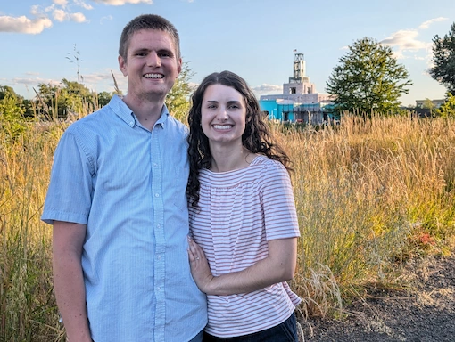

Kyle Strasdas | WDD 130
Hello! My name is Kyle Strasdas and I currently live in Springfield, OR with my wife Gracie. We are very excited to soon have a temple very closeby when the Willamette Valley Temple is complete! I enjoy anything outdoors and playing most sports, although volleyball in particular has been my focus most recently. Currently I am employed as an Administrative/Legal Assistant at a law firm, but look forward to getting more involved in software and web sevelopment in the near future.